기존 기능에
새로운 화면을 통합했습니다.
동일한 390×844 화면과 P02 + M02 구성으로 캡처했습니다. 이미지를 누르면 원본 크기로 확인할 수 있습니다.
홈
검색 아래 바로가기, 메인 조합과 보조 행, 순번형 제품 목록.

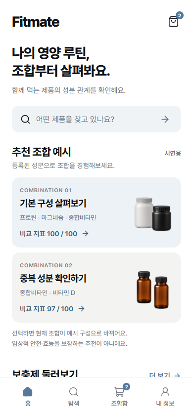

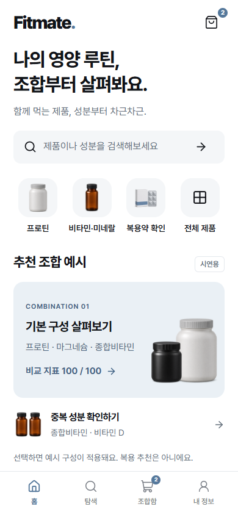
제품 탐색
9개 카테고리와 검색·필터를 유지하며 밀도를 정돈했습니다.

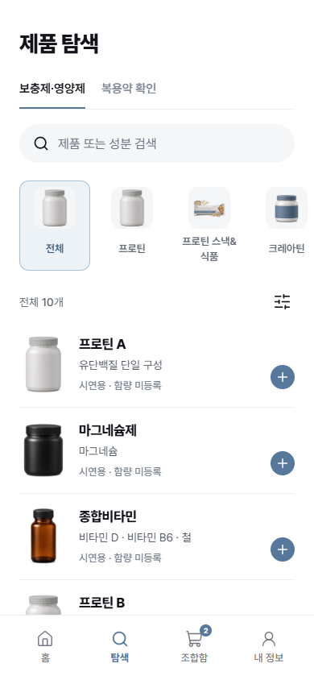

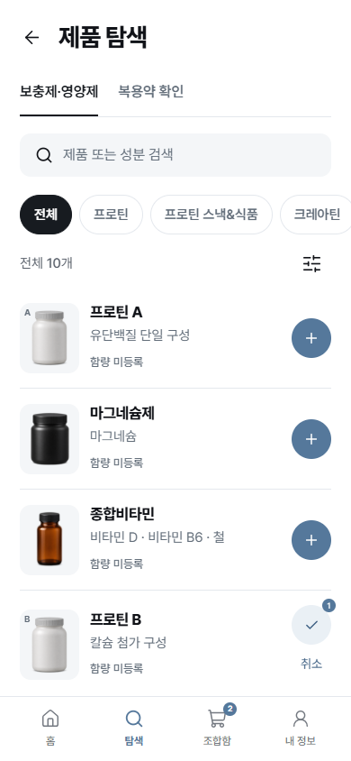
조합함
점수와 요약을 정리하고, 상세 정보 확인 아래 최적화 분석을 연결했습니다.

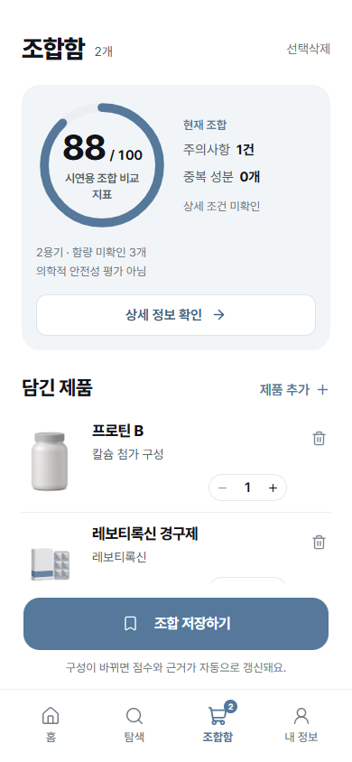

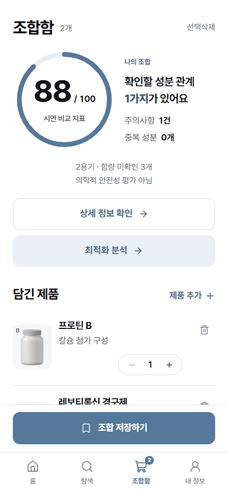
분석 상세
중복 게이지를 줄이고 실제 규칙의 성분 관계·감점·미확인 조건을 먼저 보여줍니다.

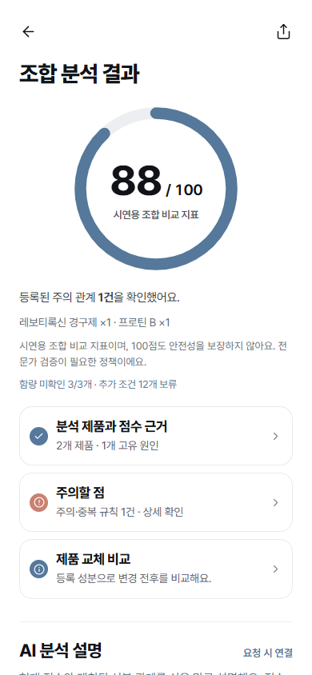

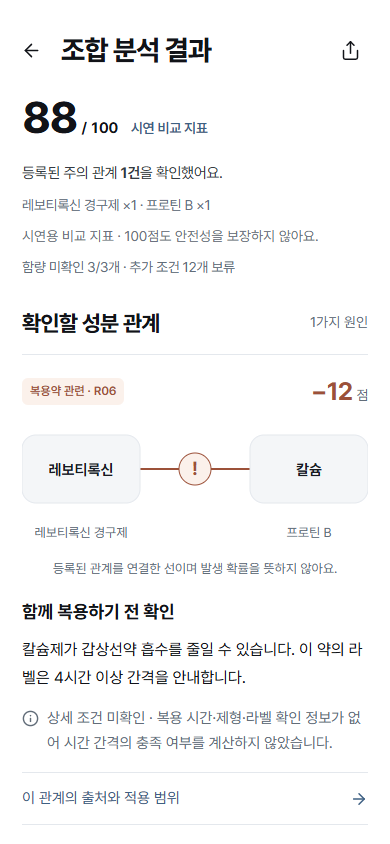
최적화
실제 엔진이 계산한 88 → 100과 변경되는 제품에 집중합니다. 안전·효능의 개선을 뜻하지 않습니다.

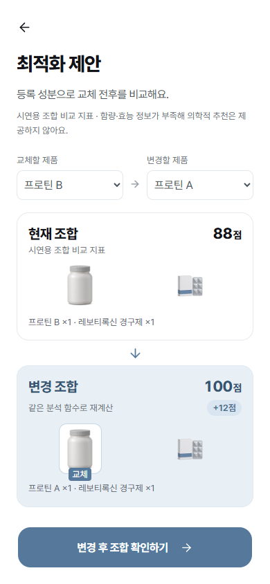

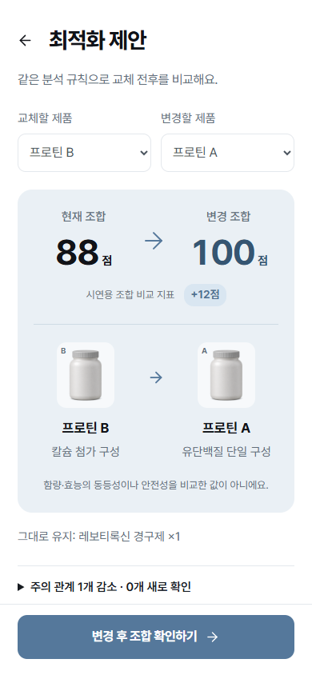
내 정보
기존 저장 형식과 복원·삭제·점수 정책 안내를 유지합니다.

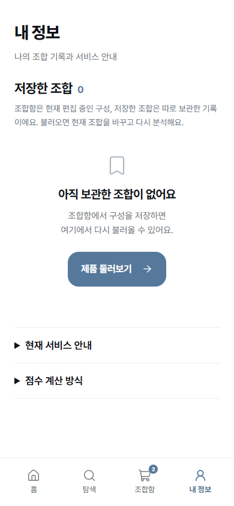

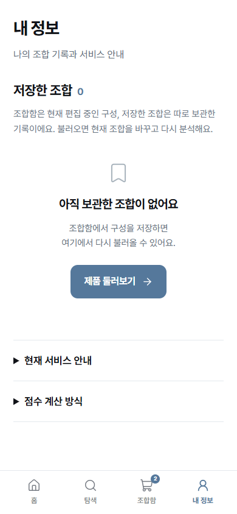